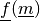
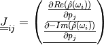
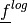

Inversion and implementation details¶
Inversion¶
The forward model is formulated using the real and imaginary parts, and is a real valued function by stacking real and imaginary part on top of each other, i.e. by doubling the data space.
![\underline{f}^{res}(\underline{m}) &=
\begin{pmatrix}Re(\hat{\rho}(\omega_1))\\ \vdots \\
Re(\hat{\rho}(\omega_K))\\ -Im(\hat{\rho}(\omega_1))\\ \vdots \\
-Im(\hat{\rho}(\omega_k))\end{pmatrix} \quad \quad
\underline{f}^{log}(\underline{m}) = \underline{f}(\underline{m}) =
\begin{pmatrix}log_{10}(Re(\hat{\rho}(\omega_1)))\\ \vdots \\
log_{10}(Re(\hat{\rho}(\omega_K)))\\ -Im(\hat{\rho}(\omega_1))\\ \vdots \\
-Im(\hat{\rho}(\omega_k))\end{pmatrix} \quad \quad \text{with } \underline{m}
= \begin{pmatrix} \rho_0\\ g_1\\ \vdots \\ g_P \end{pmatrix}\\
\underline{f}^{res}(\underline{m}) &=
\begin{pmatrix}Re(\hat{\sigma}(\omega_1))\\ \vdots \\
Re(\hat{\sigma}(\omega_K))\\ -Im(\hat{\sigma}(\omega_1))\\ \vdots \\
-Im(\hat{\sigma}(\omega_k))\end{pmatrix} \quad \quad
\underline{f}^{log}(\underline{m}) = \underline{f}(\underline{m}) =
\begin{pmatrix}log_{10}(Re(\hat{\sigma}(\omega_1)))\\ \vdots \\
log_{10}(Re(\hat{\sigma}(\omega_K)))\\ -Im(\hat{\sigma}(\omega_1))\\ \vdots \\
-Im(\hat{\sigma}(\omega_k))\end{pmatrix} \quad \quad \text{with } \underline{m}
= \begin{pmatrix} \sigma_0\\ g_1\\ \vdots \\ g_P \end{pmatrix}](_images/math/a63f0d01f75ef9c0e104f0600cfa3aa082dc61df.png)
Jacobian¶
The Jacobian of  is defined as:

As such it is a (2 F x M) matrix, with F the number of frequencies and M the number of patameters.
![\underline{\underline{J}}^{Re}_{linear} &= \begin{bmatrix} \frac{\partial
Re(\hat{\rho}(\omega_1))}{\partial \rho_0} & \frac{\partial
Re(\hat{\rho}(\omega_1))}{\partial g_1} & \cdots & \frac{\partial
Re(\hat{\rho}(\omega_1))}{\partial g_P}\\ \vdots & \ddots & & \vdots\\
\frac{\partial Re(\hat{\rho}(\omega_m))}{\partial \rho_0} & \frac{\partial
Re(\hat{\rho}(\omega_m))}{\partial g_1} & \cdots & \frac{\partial
Re(\hat{\rho}(\omega_m))}{\partial g_P} \end{bmatrix}\\
\underline{\underline{J}}^{-Im}_{linear} &= \begin{bmatrix} \frac{\partial
-Im(\hat{\rho}(\omega_1))}{\partial \rho_0} & \frac{\partial
-Im(\hat{\rho}(\omega_1))}{\partial g_1} & \cdots & \frac{\partial
-Im(\hat{\rho}(\omega_1))}{\partial g_P}\\ \vdots & \ddots & & \vdots\\
\frac{\partial -Im(\hat{\rho}(\omega_m))}{\partial \rho_0} & \frac{\partial
-Im(\hat{\rho}(\omega_m))}{\partial g_1} & \cdots & \frac{\partial
-Im(\hat{\rho}(\omega_m))}{\partial g_P} \end{bmatrix}\\
\Rightarrow \underline{\underline{J}}^{linear} &=
\begin{bmatrix}\underline{\underline{J}}^{Re}_{linear}\\\underline{\underline{J}}^{-Im}_{linear}\end{bmatrix}](_images/math/184a5c41851576e33c661dbdfa5adc249faf242d.png)
The Jacobian of  can now be computed using the chain rule:
![\frac{\partial log_{10}(Z(Y))}{\partial Y} &= \frac{\partial
log_{10}(Z)}{\partial Z} \cdot \frac{\partial Z}{\partial Y} = \frac{1}{Z
\cdot log_e{10}} \cdot \frac{\partial Z}{\partial Y}\\
\Rightarrow \underline{\underline{J}} &= \begin{bmatrix} \frac{\partial
log_{10}(Re)(\hat{\rho}(\omega_1))}{\partial \rho_0} & \frac{\partial
log_{10}(Re)(\hat{\rho}(\omega_1))}{\partial g_1} & \cdots & \frac{\partial
log_{10}(Re)(\hat{\rho}(\omega_1))}{\partial g_P}\\ \vdots & \ddots & &
\vdots\\ \frac{\partial log_{10}(Re)(\hat{\rho}(\omega_m))}{\partial \rho_0}
& \frac{\partial log_{10}(Re)(\hat{\rho}(\omega_m))}{\partial g_1} & \cdots &
\frac{\partial log_{10}(Re)(\hat{\rho}(\omega_m))}{\partial g_P} \\
\frac{\partial -Im(\hat{\rho}(\omega_1))}{\partial \rho_0} & \frac{\partial
-Im(\hat{\rho}(\omega_1))}{\partial g_1} & \cdots & \frac{\partial
-Im(\hat{\rho}(\omega_1))}{\partial g_P}\\ \vdots & \ddots & & \vdots\\
\frac{\partial -Im(\hat{\rho}(\omega_m))}{\partial \rho_0} & \frac{\partial
-Im(\hat{\rho}(\omega_m))}{\partial g_1} & \cdots & \frac{\partial
-Im(\hat{\rho}(\omega_m))}{\partial g_P} \end{bmatrix}\\
&= \begin{bmatrix} \frac{1}{Re(\hat{\rho}(\omega_1)) log_e(10)} \cdot
\frac{\partial Re(\hat{\rho})(\omega_1)}{\partial \rho_0} &
\frac{1}{Re(\hat{\rho}(\omega_1)) log_e(10)} \cdot \frac{\partial
Re(\hat{\rho}(\omega_1))}{\partial g_1} & \cdots &
\frac{1}{Re(\hat{\rho}(\omega_1)) log_e(10)} \cdot\frac{\partial
Re(\hat{\rho}(\omega_1))}{\partial g_P}\\ \vdots & \ddots & & \vdots\\
\frac{1}{Re(\hat{\rho}(\omega_K)) log_e(10)} \cdot \frac{\partial
Re(\hat{\rho})(\omega_K)}{\partial \rho_0} &
\frac{1}{Re(\hat{\rho}(\omega_K)) log_e(10)} \cdot \frac{\partial
Re(\hat{\rho}(\omega_K))}{\partial g_1} & \cdots &
\frac{1}{Re(\hat{\rho}(\omega_K)) log_e(10)} \cdot\frac{\partial
Re(\hat{\rho}(\omega_K))}{\partial g_P}\\ \frac{\partial
-Im(\hat{\rho})(\omega_1)}{\partial \rho_0} & \frac{\partial
-Im(\hat{\rho}(\omega_1))}{\partial g_1} & \cdots & \frac{\partial
-Im(\hat{\rho}(\omega_1))}{\partial g_P}\\ \vdots & \ddots & & \vdots\\
\frac{\partial -Im(\hat{\rho})(\omega_K)}{\partial \rho_0} & \frac{\partial
-Im(\hat{\rho}(\omega_K))}{\partial g_1} & \cdots & \frac{\partial
-Im(\hat{\rho}(\omega_K))}{\partial g_P}\end{bmatrix}\\](_images/math/707f595add8b158e899a56984b826e7bf4c9c665.png)